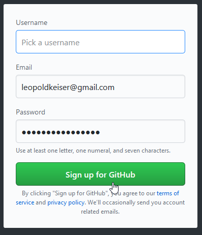
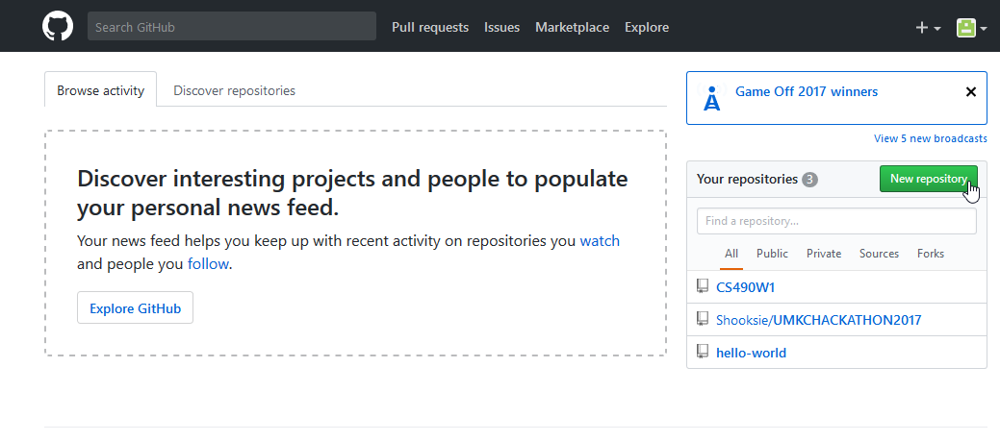
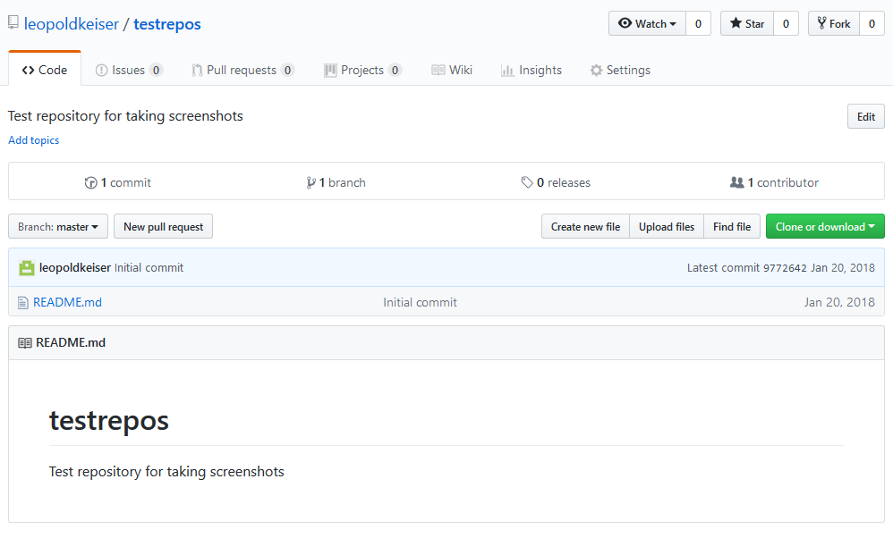

Hello world! This is HTML5 Boilerplate.
First, we created a new account on Github.
To create a Github repository, we click the "New Repository" button.
The resulting page will ask us for:
Congratulations, we've created our first Github repository!
For more information on creating Github repositories, you can try the Youtube video embedded below:
You can also peruse the following links: